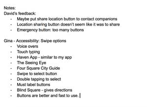
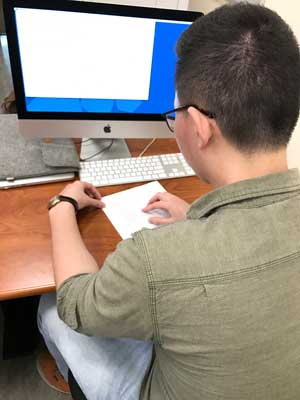

For audience testing, my users were David and Gina. For David's feedback, he stated that there were too many buttons in the homescreen making it confusing to know which one to click. For that, I plan to make either a quick intro page before entering the app and reducing the buttons. One suggestion that David stated was to change the current location icon to make it easier to know what it is. He also suggested to put the share your location button in the contacts button instead. To make the app more clear, I plan to reduce the amount of clicking and options people have to go through to contact people incase of emergencies.
In Gina's testing, I learned a lot about creating something that is accessible to the blind. During the user testing, she told me about different apps that has similar functions for blind people. She also showed me a good app that coded well for the blind. I learned that blind people used a swiping motion to choose options in an app and that labeling buttons is super important, otherwise it is useless to them. I plan to look into how to make my app more accessible to people with disabilities, because they also need a companion app as well.
 